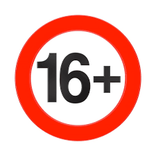
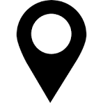
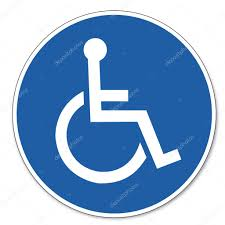
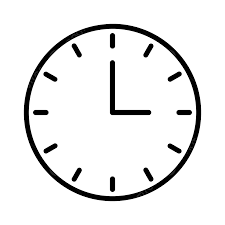
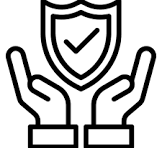

FAQ - Questions fréquemment posées
 Quel est l'âge minimum pour conduire un kart ?
Vous devez avoir au moins 16 ans pour conduire un kart, mais les jeunes de moins de 16 ans peuvent participer en tant que passagers avec un adulte.
 Où commence le parcours ?
Le parcours commence à la Place aux Aires, en plein centre de Grasse, près des principales attractions touristiques.
 Les karts sont-ils accessibles aux personnes handicapées ?
Oui, nos karts sont adaptés pour les personnes à mobilité réduite et sont facilement accessibles grâce à des rampes et des sièges spéciaux.
 Combien de temps dure une visite en kart ?
La durée de la visite varie selon le parcours choisi, mais en moyenne, une visite dure environ 1 heure.
Puis-je annuler ou modifier ma réservation ?
Oui, vous pouvez annuler ou modifier votre réservation jusqu'à 24 heures avant l'heure de départ, sans frais.
 Quels sont les mesures de sécurité ?
La sécurité est notre priorité. Nous fournissons des casques, et les conducteurs et passagers sont informés des règles de sécurité avant chaque départ. Nos karts sont également équipés de systèmes de freinage automatiques.
Peut-on conduire sans permis de conduire ?
Pas besoin de permis de conduire pour piloter nos karts. Seules les personnes de 16 ans et plus peuvent conduire, et il n'y a pas de prérequis de permis.
À propos de nos karts

Découvrez nos karts électriques, silencieux, écologiques et adaptés à tous les types de terrain.